The Team
Leadership

Sam A. Golden, PhD
Associate Professor
Director, Undergraduate Program in Neuroscience
Ronald S. Howell Distinguished Faculty Fellow
Department of Neurobiology & Biophysics, Primary
Department of Anesthesiology & Pain Medicine, Adjunct
Sam received his BS in Neuroscience from Bates College (Lewiston, ME) in 2006, PhD in Neuroscience from the Icahn School of Medicine (New York City, NY) in 2015 under Dr. Scott J. Russo, and completed his Postdoctoral Fellowship at the National Institute on Drug Abuse (Baltimore, MD) in 2018 under Dr. Yavin Shaham. Sam joined the University of Washington Department of Biological Structure in 2019, with a co-appointment as a participating faculty in the UW Center of Excellence in Neurobiology of Addiction, Pain, and Emotion (NAPE). Sam's scientific interests encompass understanding the psychological and neural mechanisms guiding reward processing. He is particularly interested in understanding how neuropsychiatric disorders — such as maladaptive aggression, depression and substance abuse — subvert basic reward circuitry to manifest pathological behavior. Currently, he aims to better define the intersection of aggression and motivation, and identify the cellular and circuit mechanisms that control the transition from adaptive aggression to maladaptive aggression-seeking behavior.
CURRICULUM VITAE - EMAIL - GOOGLE SCHOLAR - PUBMED - TWITTER
Staff and Postdoctoral Fellows
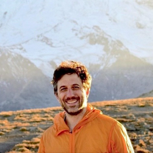
Eric Szelenyi, PhD
Acting Assistant Professor (2024-present (Postdoctoral Fellow 2019-2023))
Eric received his BA in psychology/biochemistry from Shippensburg University (Shippensburg, PA) in 2006 and conducted integrative physiology research for the Department of Defense (USARIEM, Natick, MA) from 2006-2010. He received his PhD in neuroscience from Stony Brook University (Stony Brook, NY) in 2017, completing his thesis work under Dr. Pavel Osten at Cold Spring Harbor Laboratory. Prior to joining the Golden Lab at UW, Eric worked as a Scientist at the Allen Institute for Brain Science (Seattle, WA) from 2017-2019. Eric's scientific interest includes deciphering brain-wide cellular ensembles and their dynamics that underlie behavior in health and disease.
Kevin Schneider, PhD
Postdoctoral Fellow (2022-present)

Carlee Toddes, PhD
Postdoctoral Fellow (2022-present (co-mentored with Dr. Mitra Heshmati))
A postdoctoral research fellow specializing in the study of neural dynamics underlying pain-modulated social behavior. Carlee obtained her PhD from the University of Minnesota, where she conducted research in the Rothwell Lab investigating opioidergic mechanisms that underlie social affiliative behaviors. Beyond her laboratory work, she is deeply committed to promoting positive change in the scientific community through active involvement in science policy and advocacy.
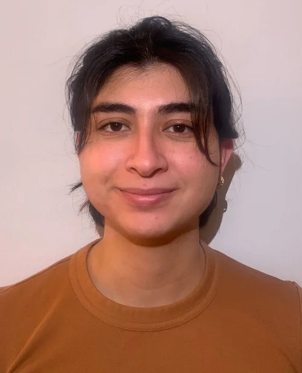
Hallie Lazaro, BS
Research Technologist (2024-present (co-mentored with the Heshmati Lab))
Graduate Trainees
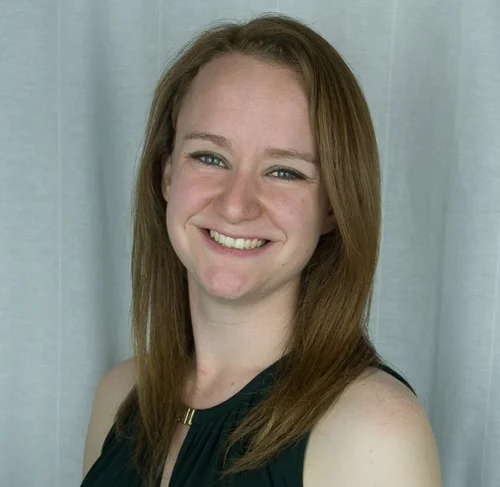
Nastacia Goodwin, BS
Graduate Student (2019-2024)
Nastacia received her BA in psychology from Smith College (Northampton, MA) in 2014. She spent four years as a lab manager after graduation, first working with Dr. Annaliese Beery at Smith and then Dr. Devanand Manoli at UCSF studying the neurobiological underpinnings of peer versus mate sociality in voles. She is excited to use her experience with behavioral work and molecular biology to study the neural ensembles driving appetitive versus reactive aggression.
Post-baccalaureate Trainees
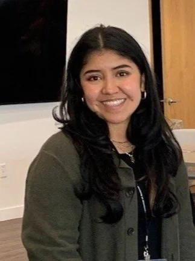
Erica Sanchez, BS
Post-baccalaureate Student (UW SOAR Program) (2024-present)
Erica received her associate degree from Elgin Community College before transferring to Seattle Pacific University, where she obtained her BS in Psychology with a concentration in Behavioral and Cognitive Neuroscience. At SPU, she worked under Dr. Baker with rodent models to investigate the neural circuitry of decision-making, behavior, and pain sensitivity. She is also interested in research on the effects of depression and addiction on behavior.
Undergraduate Trainees
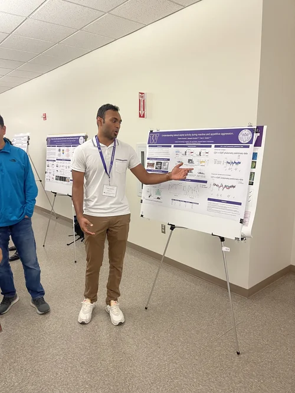
Pranav Anumolu
Undergraduate Student (2022-present)
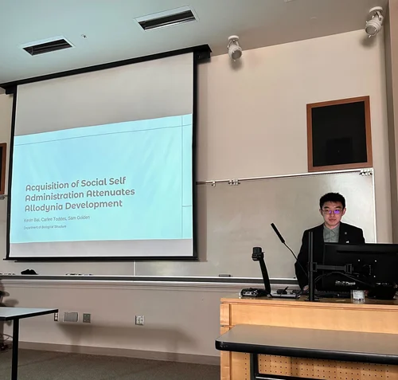
Kevin Bai
Undergraduate Student (2022-present)
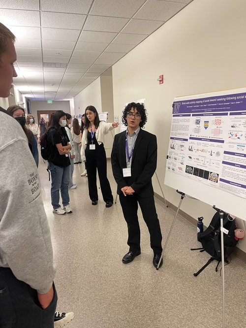
Yahir Gonzalez
Undergraduate Student (2022-present)
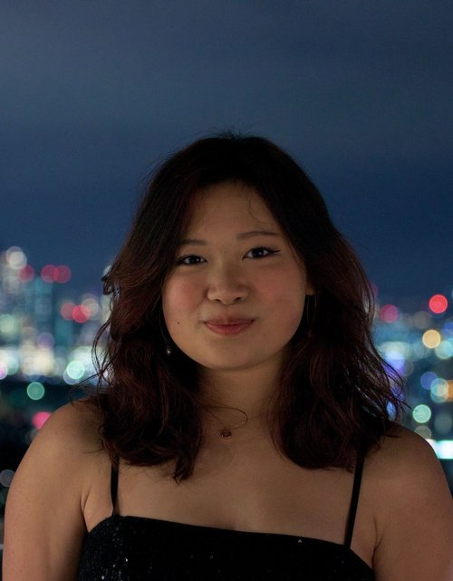
Virginia Wang
Undergraduate Student (2022-present)
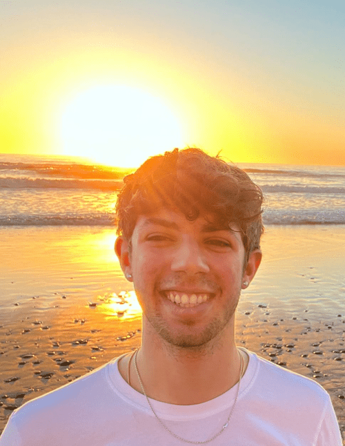
Ethan Gross
Undergraduate Student (2022-present)
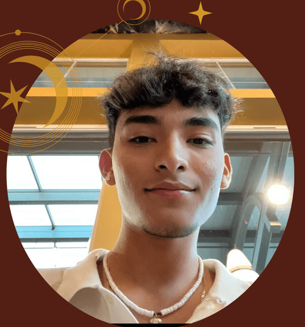
Axelle Salazar
Undergraduate Student (UW ENDURE Fellow) (2022-present)
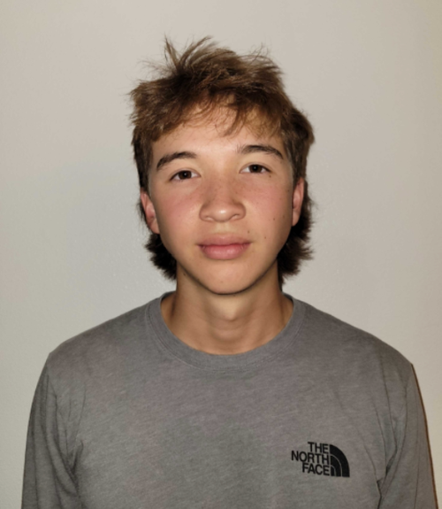
Bryce Bowler
Undergraduate Student (2022-present)
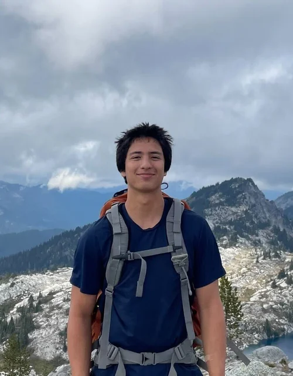
William Riley Keeler
Undergraduate Student (2023-present)
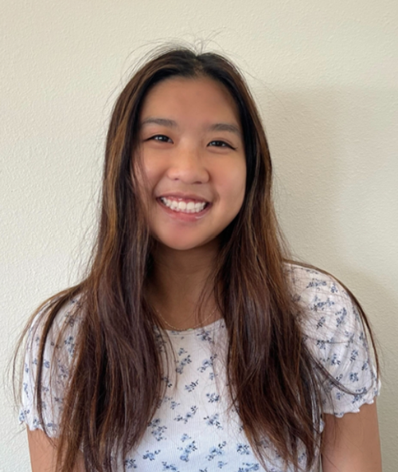
Aida Chan
Undergraduate Student (2023-present)
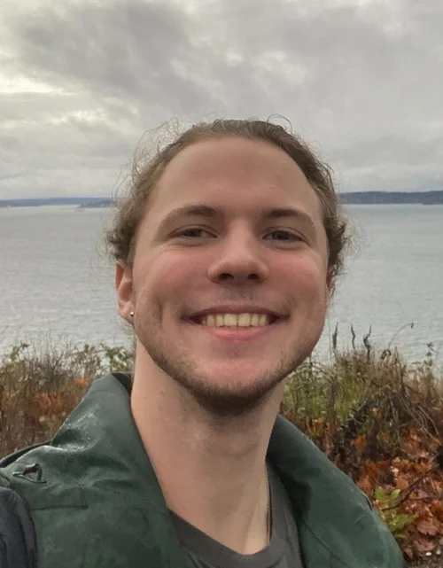
Nick Ressler
Undergraduate Student (2023-present)
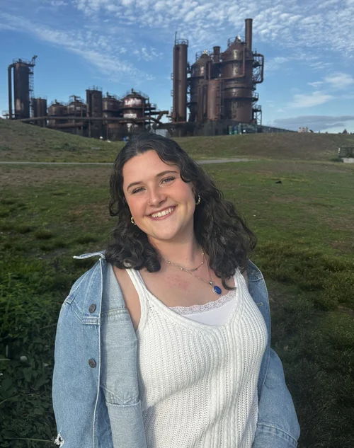
Isabel Halperin
Undergraduate Student (2023-present)
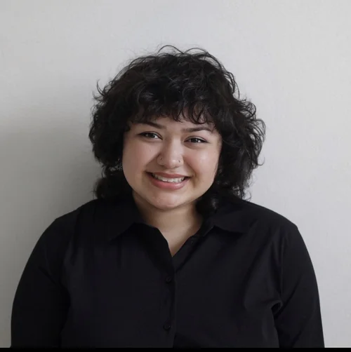
Kelsey Carvajal
Undergraduate Student (UW ENDURE Fellow) (2024-present)
Kelsey is an undergraduate student at the University of Washington pursuing a BS in Neuroscience. She is part of the Golden Lab through the UW ENDURE program. During her time in the lab she hopes to cultivate her love for neuroscience and research.
Would you like to join the lab? This could be you! See our application page for more information on currently available positions.
Alumni
Staff and Postdoctoral Fellows
- Simon Nilsson, PhD — 2019-2021 — GOOGLE SCHOLAR - PUBMED
- JJ Choong, MA — 2019-2021 — GOOGLE SCHOLAR - PUBMED
- Alex Murry, BS — 2021-2023 — PUBMED
PhD and MA Graduate Trainees
- Nastacia Goodwin, PhD — 2019-2024 — PUBMED
- JJ Choong, MA — 2019-2021 — GOOGLE SCHOLAR - PUBMED
- Roël Vrooman, MA — 2020-2021 — PUBMED
Post-baccalaureate Trainees
- Briana Smith, BS — 2019-2020
- Liana Bloom, BA — 2019-2021
- Yizhe Zhang, BS — 2021-2023
- Ainsley Barrow, BS — 2023-2024
Undergraduate Trainees
- Tanvi Shedge — 2019
- Sophia Hwang — 2019-2020
- Mahathi Allepally — 2019-2020
- Cindy Xu — 2019-2021
- Annette Mercedes — 2019-2021
- Kayla Pitts — 2019-2022
- Aasiya Islam — 2020-2022
- Arash Tabesh — 2020
- Yizhe Zhang — 2020-2021
- Valerie Tsai — 2020-2022
- Emery Leggett — 2021
- Andrea Abanto — 2021
- Kaylani Kukkadapu — 2021-2022
- Natalie Hoffman — 2021-2022
- Sarah Kadado — 2021-2022
- Drew-Elizabeth Barger — 2021-2023
- Lauren Mika Kuo — 2021-2023
- Ainsley Barrow — 2022-2023
- Sam Husarik — 2023-2024
High School Trainees
- Anika Consul — 2019-2020 (Tesla STEM High School)
- Hermona Hadush — 2021 (UW Rainier Summer Program)
- Shagun Seth — 2022 (UW Rainier Summer Program)
- Netrang Desai — 2022-2023 (Juanita High School)
- Aida Chan — 2023 (UW U-BRIGHT Summer Program)